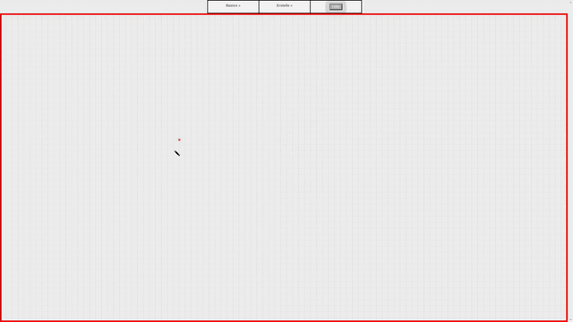

Dokumentation
Hilfe zu den Basics:

Das ist die integrierte Eingabemöglichkeit des Protokolls. Sie besteht aus zwei grundlegenden Bereichen
dem Bedienfeld und dem Zeichenfeld. Das Bedienfeld ist in drei Spalten unterteilt, diese werden später genauer
beschrieben. Das Zeichenfeld ist der rot umrahmte Bereich. Die erste Spalte
befasst sich mit der handschriftlichen Bearbeitung des Zeichenfeldes. Hier können für die Werkzeuge Stift und
Radiergummi die Breite eingestellt werden (Hinweis: Die Breite bezieht sich auf beide Werkzeuge). Außerdem ist
es möglich die Mienenfarbe des Stiftes einzustellen. Der Button mit der Aufschrift "Lösche Handschrift" löscht lediglich
den Handbeschriebenen Layer. Mit dem Tool Hintergrund können Sie einen geeigneten Hintergrund festlegen.
Hilfe zur Funktion aus einer Wertetabelle:
Zu Beginn ist eine Beispielwertetabelle zu sehen. Jede Wertetabelle besitzt vier Schaltflächen, welche nur zur
Bedienung der darüber befindlichen Punktewolke vorgesehen sind. Die Schaltflächen "Add Row" und "Delete Row" ermöglichen es
einen weiteren Punkt hinzuzufügen oder den letzten Punkt zu löschen. Die Schaltfläche Show zeichnet die Punkte der
Reihe nach in das jeweilige KOS. Punkte welche sich außerhalb des darstellbaren Berreiches befinden, werden imaginär gesetzt.
Das bedeutet die Kurve wird dennoch von diesen Punkten beinflusst. Jeder Graph kann unter zuhilfenahme des oberen Inputfeldes benannt werden.
Der Name erscheint dann im Label, dass in gleicher Farbe wie der Graph im Zeichenfeld gerendert wird. Mit dem Button "neue Wertetabelle"
können beliebig viele weitere Punktewolken erschaffen werden.
Hilfe zur Textfeldfuntion:

Mit betätigung der Schaltfläche "neues Textfeld" erscheint ein solches in dem Zeichenfeld. Das Zeichenfeld wird mit
einem Doppelklick in den Bearbeitungsmodus versetzt. Daraufhin verschwindet der Blaue Rahmen und die zwei runden Schaltflächen. Jetzt
kann der Text bearbeitet werden. Ein Zeilenumbruch kann mit der Tastenkombination Shift+Enter eingefügt werden. Die Höhe des Textfeldes
wird automatisch an den Inhalt angepasst. Ist man mit dem bearbeiten des Textes fertig, so bestätigt man seine eingabe mit Enter. Mithilfe
des kleinen Rechtecks am rechten Rand kann die Breite festgelegt werden. Und mit dem anderen kann der Text um den eigenen Mittelpunkt gedreht werden.
Die rote Schaltfläche löscht das dazugehörige Textfeld. Mit dem grauen Button kann der blaue Rahmen, falls nötig, versteckt werden.
Hilfe zur Geradenfunktion:
Mit einem Klick auf den entsprechenden Button erscheint eine Gerade im Zeichenfeld. Die Gerade hat an ihren beiden Enden zwei
individuell bewegbare graue, schwarz umrandete Flächen. Durch deren Mittelpunkte ist die Gerade definiert. Mit dem bunten Knopf an oberen Rand
kann die Farbe Zufällig verändert werden. Die rote Schaltfläche löscht die Gerade.
Hilfe zu der Vektorenfunktion:
Ein Vektor mit Label wird nach Klick auf die Schaltfläche "neuer Vektor" erschienen. Mit einem Doppelcklick auf das Label
kann der Name des Vektors festgelegt werden. Nach drücken der Entertaste wird der Name übernommen. Der Vektor kann als ganzer im Zeichenfeld verschoben werden. Mit der grauen Fläche an der Spitze kann
Betrag und Phase des Vektors eingestellt werden. Mit einem Doppelclick auf den Vektor wird dieser samt Label gelöscht.
Hilfe zu der Ladefunktion:
Nach auswahl eines eigenen Bildes wird dieses formatfüllend im Zeichenfeld dargestellt. Ein geladenes Bild ist in jedem Fall als solches
ersichtlich.